Основы теории графов
Граф — абстрактный математический объект, представляющий собой множество вершин графа и набор рёбер,
то есть соединений между парами вершин. Например, за множество вершин
можно взять множество аэропортов, обслуживаемых некоторой
авиакомпанией, а за множество рёбер взять регулярные рейсы этой
авиакомпании между городами.
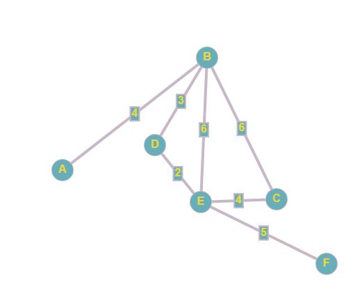
Ориентированный граф (кратко орграф) — (мульти) граф, рёбрам которого присвоено направление. Направленные рёбра именуются также дугами, а в некоторых источниках и просто рёбрами.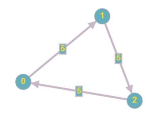
связанный граф- граф, содержащий ровно одну компоненту связности. Это означает, что между любой парой вершин этого графа существует как минимум один путь.
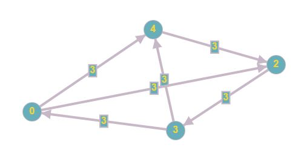
Несвязный граф -- граф, содержащий более одной компоненты связности.
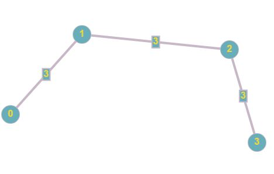
Степень вершины графа — количество рёбер графа , инцидентных вершине .
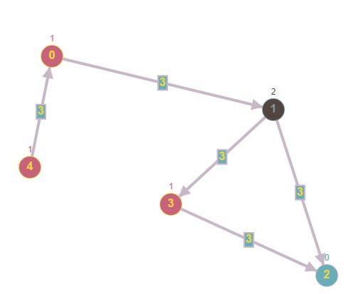
дерево —это связанный ацикличный граф (ориентированный граф,
не содержащий циклов), в котором только одна вершина имеет нулевую
степень захода (в неё не ведут дуги), а все остальные вершины имеют
степень захода 1 (в них ведёт ровно по одной дуге).
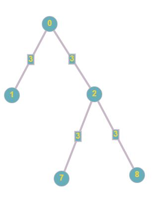
изоморфизмом графов называется биекция между множествами вершин графов такая, что любые две вершины и графа смежны тогда и только тогда, когда вершины и смежны в графе.
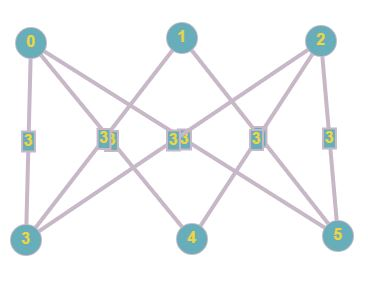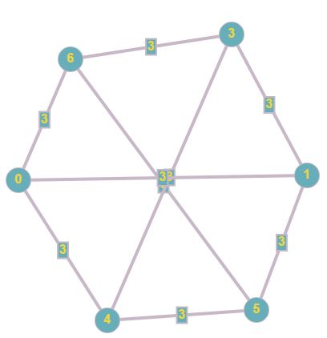
Эйлеров цикл — эйлеров путь, являющийся циклом, то есть замкнутый путь, проходящий через каждое ребро графа ровно по одному разу.
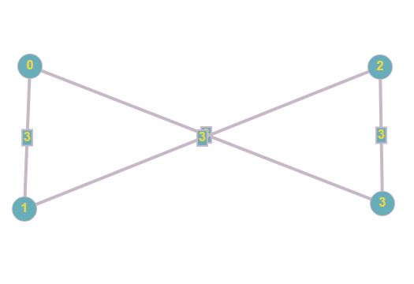
Эйлеровцикл в графе – цикл, содержащий все ребра графа, причем через каждое ребро проходим ровно один раз.
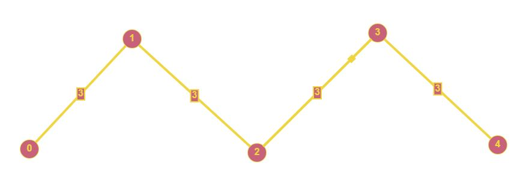
Гамильтоновцикл (цепь) – цикл (цепь), проходящий (проходящая) через каждую вершину графа в точности по одному разу.
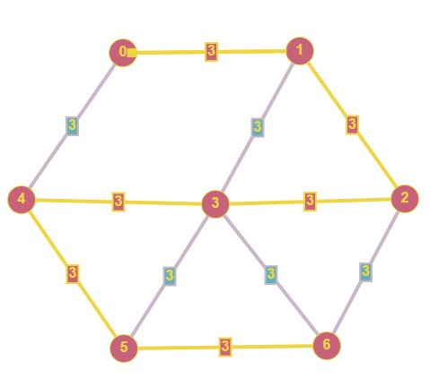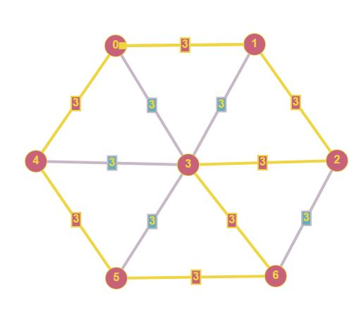
Алгори́тм Де́йкстры (англ. Dijkstra's algorithm) — алгоритм на
графах, изобретённый нидерландским учёным Эдсгером Дейкстрой в 1959
году. Находит кратчайшие пути от одной из вершин графа до всех
остальных.
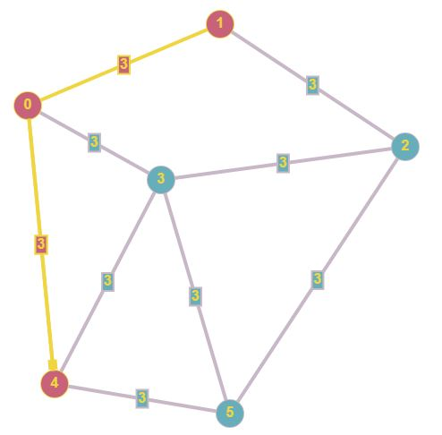